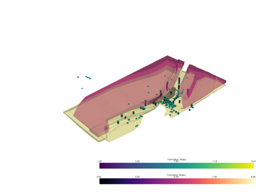
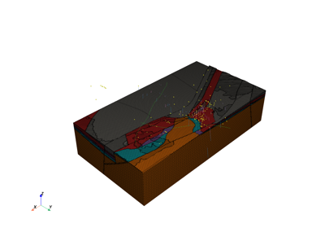
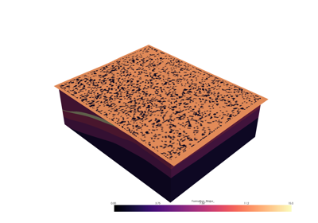
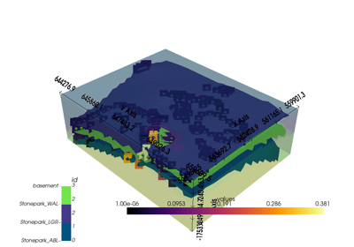

Geological Models¶
Here you will find a selection of examples showing what can you do and how you can do it in Vector.

Reading COLLINSTOWN OMF project
Reading COLLINSTOWN OMF project

Reading COLLINSTOWN OMF project
Reading COLLINSTOWN OMF project

Reading Stonepark OMF project

Stonepark Geological Model